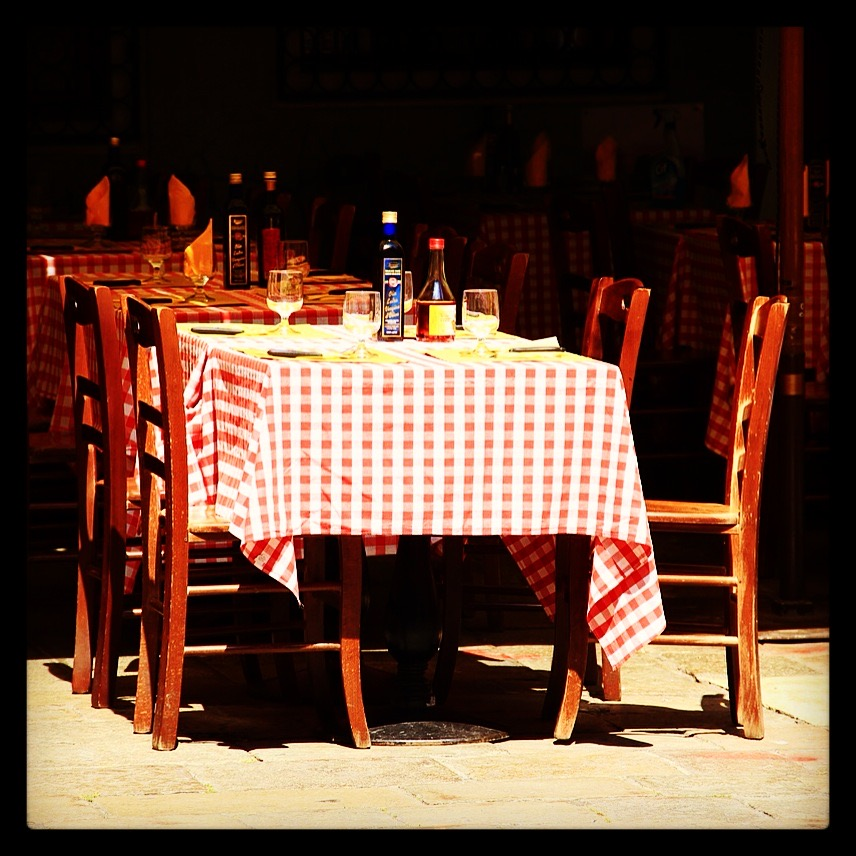

Photo by Francesca Tosolini
In Italy, lunch is usually between noon and 2pm, while dinner is between 7:30pm and 9:30pm. The further south you go, the later you eat. Try to get to the restaurant before 2pm (or 9:30pm), because if you order your meal before 2pm (or 9:30pm), then you can stay in the restaurant as long as you want, but if you arrive after 2pm (or 9:30pm) you risk being turned away. {This is an excerpt from chapter 3 “Italian cuisine and food establishments” of the eBook “Italy from the Inside. A native Italian reveals the secrets of traveling in Italy”. To buy our eBook click here}